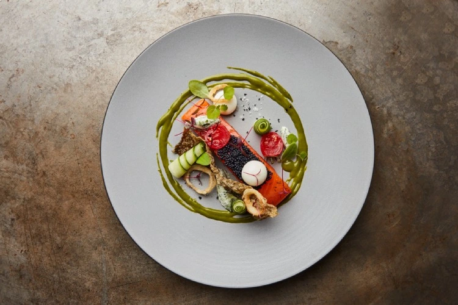
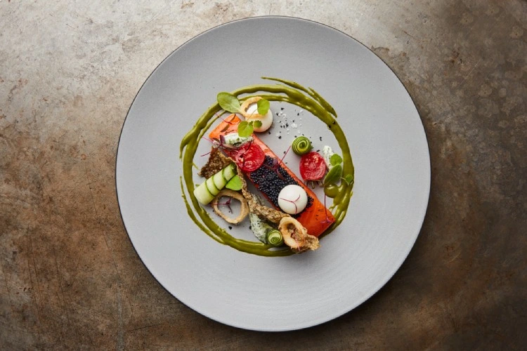

About us
Welcome to La Citadelle, where we redefine the art of fine dining in the heart of London.
Nestled in one of the city's most iconic locations, our restaurant stands as a beacon of culinary excellence.
Step inside our restaurant, and you will find yourself immersed in an ambiance of luxury and sophistication.
With elegant décor, soft lighting, and an attentive service team, we set the stage for an unforgettable dining experience.
Our intimate dining spaces are perfect for romantic evenings, celebrations, or simply savouring the pleasure of refined cuisine.
Contact us
Should you wish to reserve a table or inquire about hosting an event at our restaurant, please contact our reservations team using the details below:
reservations@lacitadelle.com or call 02045135208
You can also visit our restaurant
Alternatively you can complete the reservations form found on the bookings page:
Click here
Please note that availability for private dining may be subject to reservation and event planning.
Opening Times
| Day | Opens | Closes |
|---|---|---|
| Monday | 12:00 PM | 09:30 PM |
| Tuesday | 12:00 PM | 09:30 PM |
| Wednesday | 12:00 PM | 09:30 PM |
| Thursday | 12:00 PM | 09:30 PM |
| Friday | 12:00 PM | 11:00 PM |
| Saturday | 12:00 PM | 11:00 PM |
| Sunday | 12:00 PM | 09:30 PM |